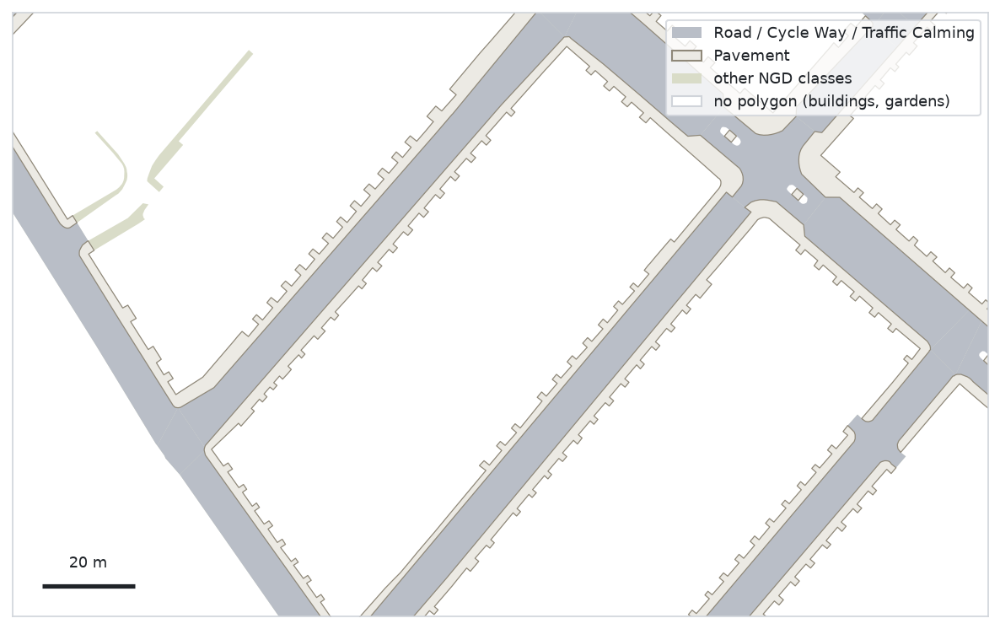
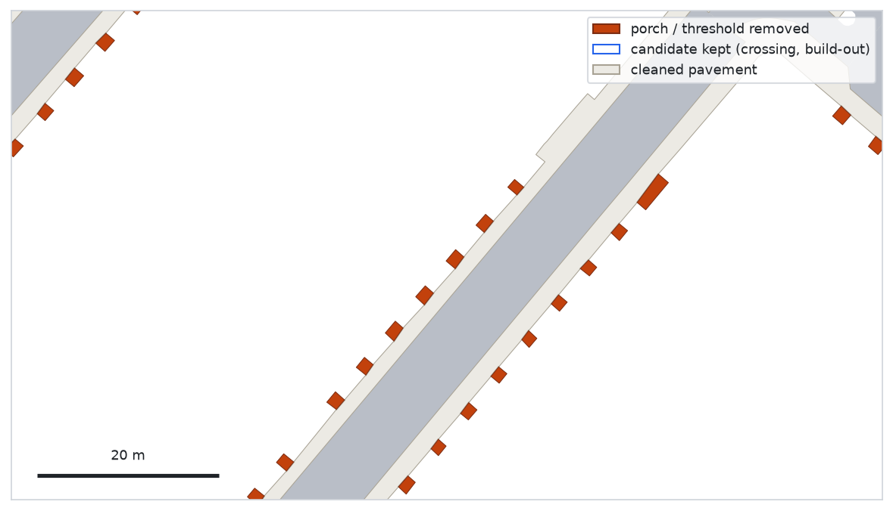
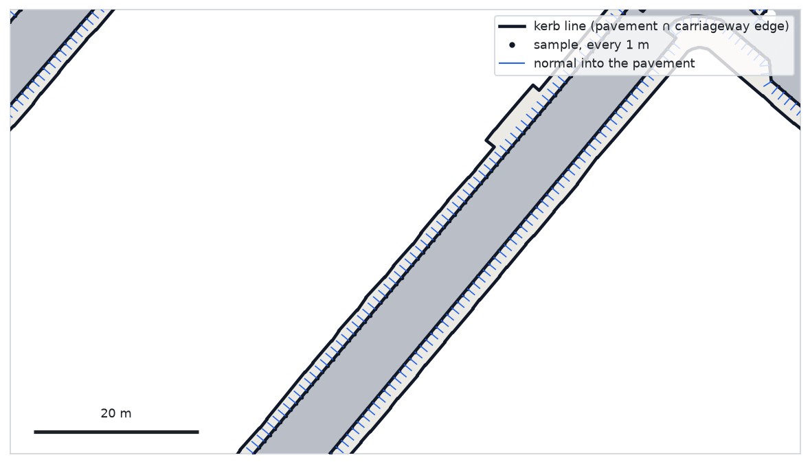
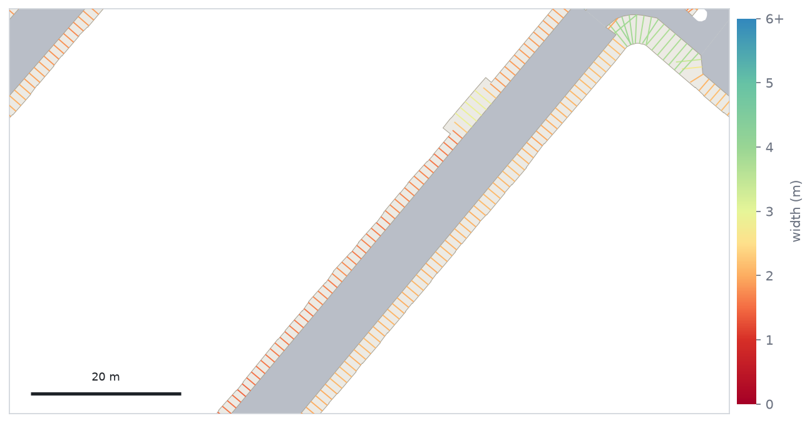
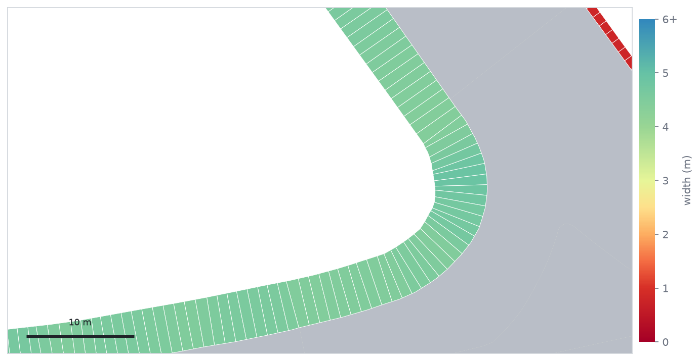
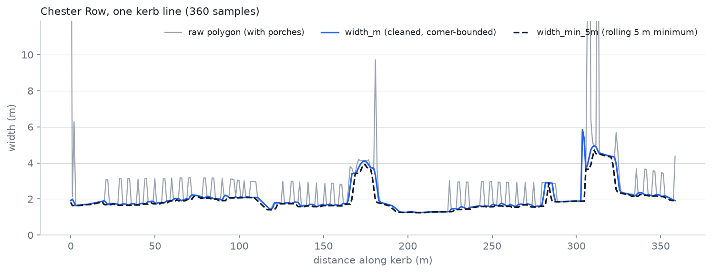
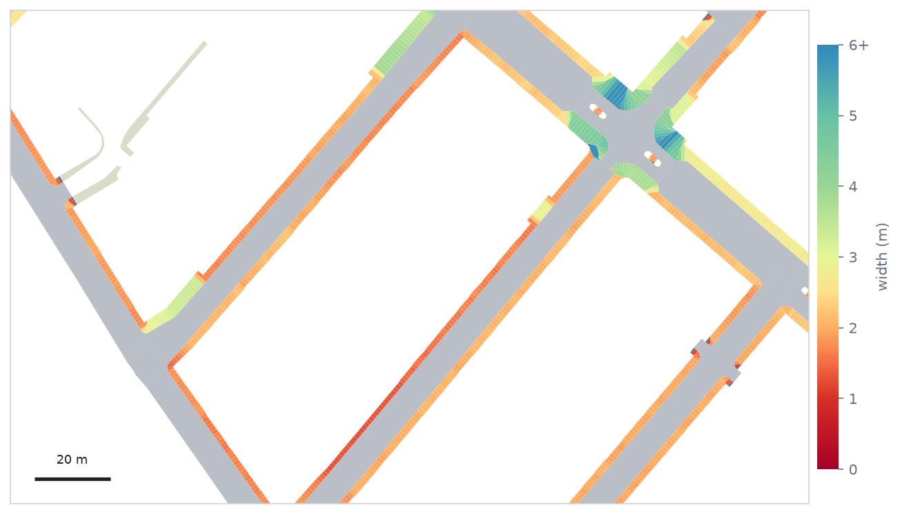
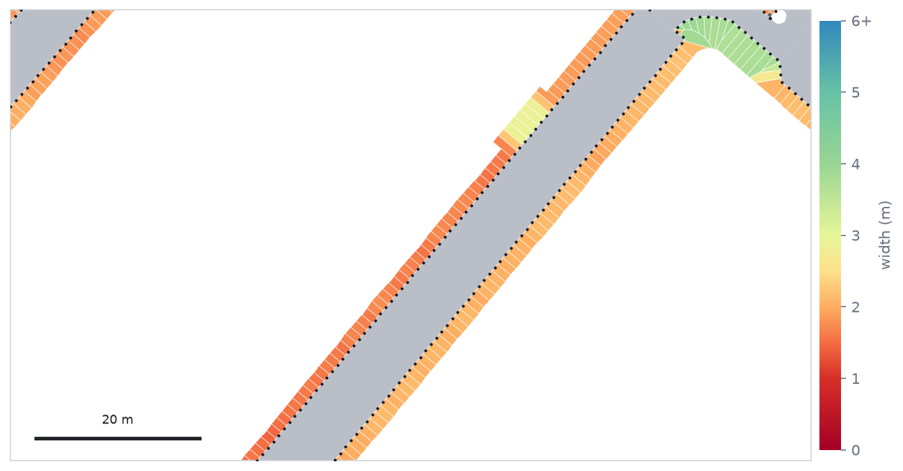
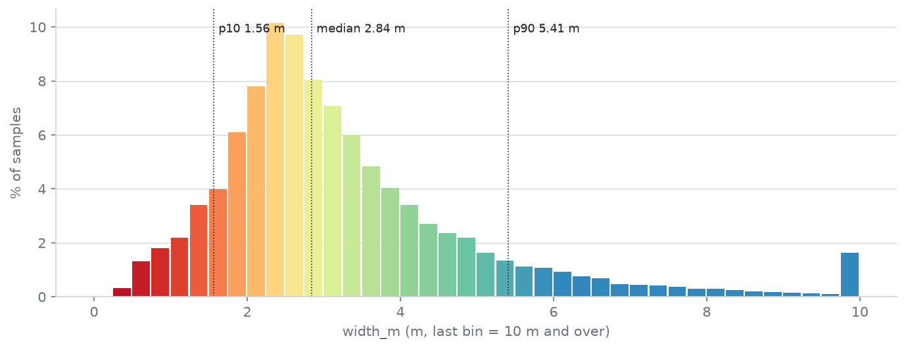

Pavement space in Westminster is in constant demand. Almost everything we put on the footway, or allow others to put there, takes some of it, and many everyday decisions come down to one question: how wide is the pavement at this exact spot? A width for every metre of kerb in the borough helps answer it, for questions like:
- Placing street furniture: can a cycle hangar, EV charger, bench or hire-bike bay go here and still leave enough room to walk past?
- Licensing: will a café's tables and chairs, or a scaffold, leave a usable footway?
- Accessibility: where are the pinch points too narrow for a wheelchair or a double buggy?
- Busy streets: which footways struggle with crowds near stations, theatres and shops?
- Prioritising schemes: which streets most need widening, backed by borough-wide evidence?
- Responding to change: if social distancing is ever needed again, which footways allow two metres between people?
For all of these, an average width per street is not much use. The question is local: is there two metres clear at this bit of kerb? Width classes ("narrow / medium / wide") and per-street averages both hide exactly the pinch points that matter.
So the goal here was a continuous width at every metre of kerb in Westminster, drawn on the real pavement geometry rather than on a simplified centreline. The end result is about 617,000 slices of pavement, each about a metre long along the kerb, each carrying its own width. This post walks through how they are made, step by step.
Explore the pavement widths map →
The data
The source is OS National Geographic Database (NGD) Road Track or Path, a layer of surveyed polygons that splits the street into Road, Pavement, Central Reservation, Traffic Calming, Cycle Way and a dozen other classes.
| Class | Polygons in Westminster |
|---|---|
| Road | 7,649 |
| Pavement | 4,920 |
| Path | 2,521 |
| Central Reservation | 1,338 |
| Traffic Calming | 668 |
| others (Transport Curtilage, Shared Use Carriageway, Cycle Way …) | 742 |
The Pavement class covers 190 ha. I measure only roadside pavement: Pavement
and Pavement And Steps. Paths through parks and squares are a different problem and are left out
for now.

Step 1: clean up the data
The OS polygons are drawn for mapping, not for measuring, so a few things are tidied up before any widths are taken:
- Porches and front steps removed. The pavement polygon runs right up to the building line, which on a Victorian terrace steps in and out at every front door. Left in, these would make the pavement look a metre wider every few metres. They're cut out from the building side, so the kerb edge is never touched.
- Seams joined. OS splits continuous pavement at arbitrary points. These are merged so that a measurement doesn't stop at a line nobody can see on the ground.
- Small holes filled. Tree pits, kiosks and cellar lights leave small holes in the polygons. These are filled for the measurement, while larger holes (real city blocks) stay.

Step 2: find the kerb
Every width here is measured from the kerb, so the kerb has to be found first. It is the part of a pavement's boundary that touches the carriageway. Using Road polygons alone leaves 171 pavements (2.2 ha) with no kerb at all. Most of them are on the Embankment, where a Cycle Way polygon sits between the pavement and the road. The final kerb is the boundary shared with any of Road, Cycle Way, Traffic Calming, Central Reservation or Shared Use Carriageway. With that change only 38 polygons have no kerb, and those get a skeleton fallback (twice the distance to the medial axis).
Each kerb line is then sampled every metre. The spacing is adjusted per line so the samples are evenly spaced end to end. At each sample the tangent comes from the points ±0.5 m either side, and the normal points into the pavement.

Step 3: a cross-section at every metre
From each sample a ray goes out along the normal, up to 25 m, and is clipped to the pavement polygon. One detail matters a lot here. A ray that leaves the polygon and re-enters it (across a light well, or a jog in the building line) would come back as several pieces. Only the piece that starts at the kerb point is kept, which I call the first-exit rule. Rays shorter than 0.2 m are rejected as slivers.

Corners
Round a curved kerb the rays point toward the centre of the curve and run diagonally across the widening pavement, so on their own they would overstate the width. So each sample also measures the radial width: the distance to the nearest point on the back of the pavement, looking within ±45° of the ray. On a straight pavement the two are the same; at a corner the radial is shorter. The width used is the smaller of the two.

Step 4: rolling minima
A width at one point can be misleading if 2 m further along there is a pinch. So each kerb line also gets a
rolling minimum over 2 m and 5 m windows: width_min_2m and width_min_5m. The windows
never cross a break in the kerb. For siting, the 5 m minimum is the honest number, since a hangar is about that
long.

width_m after porch removal and corner capping. Dashed: the 5 m rolling minimum. The
two plateaus near 4 m are genuine widenings at junctions.Step 5: Voronoi slices
A width per kerb point is a line, and a map of 618k lines is unreadable. What the map needs is area: every square metre of pavement should carry the width of the kerb it belongs to. The tool for that is a Voronoi diagram.
Start with a set of points. A point's Voronoi cell is every location that is closer to that point than to any other. Here the points are the kerb samples, one per metre, so each cell is the patch of pavement whose nearest kerb metre is that sample. Three properties make this a good fit:
- No gaps, no overlaps. The cells partition the plane, so once they are clipped to the pavement polygon every bit of pavement belongs to exactly one sample.
- The edges are perpendicular bisectors. The boundary between two neighbouring samples is the line halfway between them, at right angles to the gap. Along a straight kerb that gives strips 1 m wide, square to the kerb, which is what you would draw by hand. Round a convex corner the bisectors fan out and meet near the centre of the curve. In an inside corner they pinch together.
- The real edges survive. Each cell is intersected with the OS polygon, so the back of each slice is the actual building line and holes like tree pits stay cut out. Where the pavement opens into a forecourt, the cells just reach further back, so wide areas are covered too.
Each slice then takes its sample's width, so colouring the slices colours the pavement.
Voronoi is used once more, for the 38 pavements that touch no carriageway and so have no kerb to sample. For these, points are placed every metre round the polygon's edge and their Voronoi diagram is taken. The cell edges that fall inside the polygon trace its centreline, also called the medial axis or skeleton. After pruning the short spurs, the width at each skeleton point is twice its distance to the nearest edge.


What Westminster looks like
Explore the pavement widths map →

width_m. p10 1.56 m, median 2.84 m, p90 5.41 m. About 19 % of
kerb metres are under 2 m and 9 % are under 1.5 m. That is the stock where a 2 m object cannot go without
blocking the footway.About 3 % of samples read 8 m or more. I checked them one by one: most are real. Oxford Street, Whitehall, Constitution Hill, the Embankment and Portman Square all have rays that end at a building or park edge 8–25 m from the kerb. The artefacts (junction splays, islands with no back edge, rays hitting the 25 m cap) are about half a percent of samples.
Honest limits
- These are kerb-to-back-of-footway widths, not clear widths. Lamp columns, trees, bins and cycle stands are not in the polygons. NGD has a street-light layer that could be subtracted later.
- Expect ±0.2–0.3 m. OS's stated absolute accuracy in urban areas is ±0.4 m.
- Corners are bounded, not solved. A corner reads the distance to the nearest building face within 45°, which is a fair answer to "how much room is there at this kerb point" but not a unique one.
- Paths, parks and squares not typed as Pavement are excluded. The 38 pavements with no kerb use a skeleton estimate.
Recap
- Pull NGD Road Track or Path; keep Pavement and Pavement And Steps.
- Cut porches and thresholds from the building side; never touch the kerb.
- Dissolve seams, fill holes ≤ 100 m², find the kerb against five carriageway-like classes.
- Sample every metre; cast a normal ray with the first-exit rule.
- Width = min(ray, nearest back edge within ±45°); add 2 m and 5 m rolling minima.
- Cut each polygon into Voronoi slices of its kerb samples; colour by width.
Contains OS data © Crown copyright and database rights 2026. Boundary: Office for National Statistics, Open Government Licence v3.0. Figures are drawn from the pipeline outputs; widths are a derived product, not survey measurements, and errors are mine.